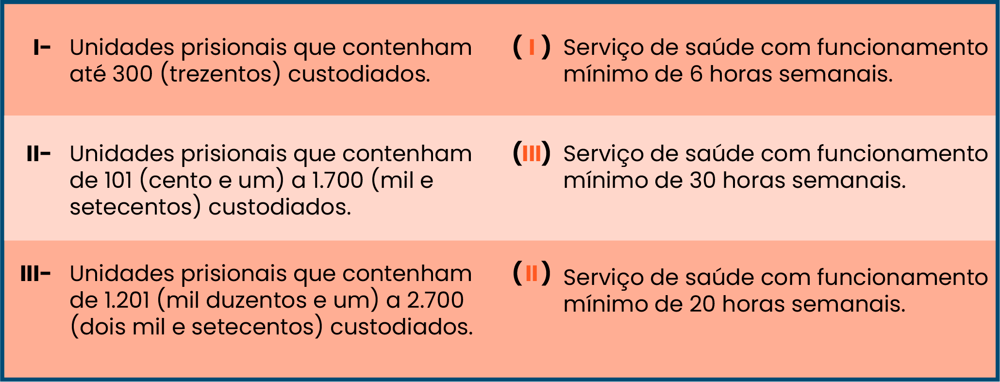

Questão 1
Relacione as colunas quanto ao funcionamento previsto (em horas de trabalho) para a oferta de serviços de saúde prisional de acordo com o quantitativo de custodiados.

Resposta correta
Parabéns! De acordo com com a Portaria GM/MS no 2.298/2021, ao considerar a população prisional e o funcionamento dos serviços de saúde, o MS classifica os estabelecimentos prisionais, em três faixas, a saber: I - unidades prisionais que contenham até 300 (trezentos) custodiados: serviço de saúde com funcionamento mínimo de 6 (seis) horas semanais, sob responsabilidade do ente municipal, por meio de eAPP; II - unidades prisionais que contenham de 101 (cento e um) a 1.700 (mil e setecentos) custodiados: serviço de saúde com funcionamento mínimo de 20 (vinte) horas semanais, sob responsabilidade do ente estadual ou municipal, por meio de eAPP Essencial ou Ampliada; III - unidades prisionais que contenham de 1.201 (mil duzentos e um) a 2.700 (dois mil e setecentos) custodiados: serviço de saúde com funcionamento mínimo de 30 (trinta) horas semanais, sob responsabilidade do estado ou município, por meio de eAPP Essencial ou Ampliada podendo esta ser complementada.
Resposta incorreta
Na verdade, a sequência correta não é essa. Vamos conferir? De acordo com a Portaria GM/MS no 2.298/2021, ao considerar a população prisional e o funcionamento dos serviços de saúde, o MS classifica os estabelecimentos prisionais, em três faixas, a saber: I - unidades prisionais que contenham até 300 (trezentos) custodiados: serviço de saúde com funcionamento mínimo de 6 (seis) horas semanais, sob responsabilidade do ente municipal, por meio de eAPP; II - unidades prisionais que contenham de 101 (cento e um) a 1.700 (mil e setecentos) custodiados: serviço de saúde com funcionamento mínimo de 20 (vinte) horas semanais, sob responsabilidade do ente estadual ou municipal, por meio de eAPP Essencial ou Ampliada; III - unidades prisionais que contenham de 1.201 (mil duzentos e um) a 2.700 (dois mil e setecentos) custodiados: serviço de saúde com funcionamento mínimo de 30 (trinta) horas semanais, sob responsabilidade do estado ou município, por meio de eAPP Essencial ou Ampliada podendo esta ser complementada.